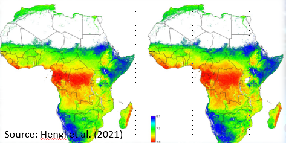

Digital soil mapping (DSM) is a technique that uses advanced technologies such as remote sensing, geographic information systems (GIS), and statistical modeling to create high-resolution maps of soil properties and characteristics. These maps can be used to support a variety of applications, including land use planning, precision agriculture, natural resource management, and environmental modeling.
DSM typically involves the collection of soil data from a variety of sources, including soil surveys, soil samples, and remote sensing data such as satellite imagery. This data is then combined and analyzed using a range of statistical and machine learning algorithms to develop predictive models of soil properties, such as soil texture, organic matter content, and nutrient availability.
The resulting soil maps are highly detailed and can provide valuable information about soil characteristics at the landscape level, such as soil types, soil health, and soil fertility. This information can be used to optimize crop management practices, evaluate the environmental impacts of land use changes, and support conservation efforts.

Overall, digital soil mapping is an important tool for understanding the complex interactions between soil, land use, and the environment, and can help support more sustainable and effective land management practices.
Components of DSM
INPUT: field and laboratory observations, environmental covariates
PROCESS: mathematical or statistical models (spatial and non-spatial)
OUTPUT: The output includes raster of prediction maps with the uncertainty of prediction. This output can be readily updated as new information becomes available
Digital Soil Mapping in Bangladesh
In Bangladesh, DSM has been identified as a priority area for agricultural development and soil resource management.The country has a diverse range of soils, including alluvial, deltaic, and coastal soils, which are highly variable in terms of their physical, chemical, and biological properties. DSM in Bangladesh involves the collection of various soil data, including soil types, soil texture, soil organic matter content, soil pH, soil fertility, and soil moisture. These data are then integrated with digital data on topography, climate, vegetation, and land use to create soil maps and databases.
DSM in Bangladesh has several benefits, including:
Improved land use planning: DSM can provide accurate and detailed information on soil properties, which can be used for land use planning and management.
Improved crop productivity: DSM can provide information on soil fertility, soil moisture, and other factors that can affect crop productivity, helping farmers to make informed decisions about crop selection and management practices.
Conservation of soil resources: DSM can help in identifying areas with soil erosion and degradation issues, leading to the development of conservation strategies.
Improved agricultural research: DSM can provide valuable information for agricultural research and development.
Overall, DSM in Bangladesh has the potential to improve agricultural productivity, promote sustainable land use practices, and support soil conservation efforts.
Although several books and online tutorials are available related to DSM in R, this training-workshop targets national scientists in Bangladesh who have working experience soil science, GIS, and statistics.
This training-workshop will covered following lessons:
Basic R
Data Wrangling with R
3.1.Introduction to Data Wragling
Data Exploration with R
Regression Analysis
Multivariate Statistic
Machine Learning
Spatial Data Processing
Digital Terrain Modeling
Remote Sensing
Spatial Interpolation
After finishing these lessons all participant will work on soil data and will produce digital soil maps of Bangladesh.

Zia U Ahmed, PhD
Research Associate Professor (Data & Visualization)
RENEW (Research and Education in eNergy, Environment and Water) Institute